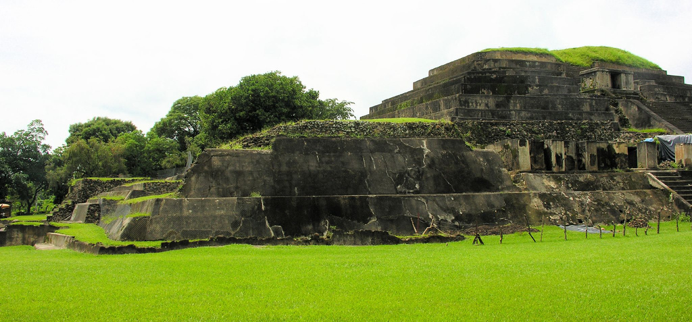

Santa Ana es un departamento de El Salvador que se ubica en la zona occidental de la República de El Salvador. Sus límites geográficos mencionan que Santa Ana limita al norte con Honduras y con Guatemala; al oriente con Chalatenango y La Libertad; al sur con Sonsonate y Ahuachapán, y al poniente con Guatemala.
El nombre antiguo de este lugar era Sihuatehuacán que en nahuat significa “Ciudad de sacerdotisas”. Sin embargo el 26 de julio de 1569, el obispo de Guatemala, Bernardino de Villalpando, construyó en la población una ermita en honor de Nuestra Señora de Santa Ana y le cambió a Santa Ana la Grande.
El Decreto de Estado del 22 de mayo de 1835 convirtió a la villa de Santa Ana en cabecera de Sonsonate, pero debido a la extensión se presentaron problemas para gobernarlo, entonces se optó por separar a Santa Ana del resto del territorio.
| Info 1 | Info 2 |
|---|---|
|  | El complejo arqueológico de Chalchuapa fue una ciudad ceremonial maya que cuenta con 58 templos y 87 altares en total, es el complejo arqueológico más importante de El Salvador debido a una antiguedad de 2000 años a.C. Según la arqueología mundial el origen de la gran civilización maya fue en el corredor de Kaminaljuyú y Chalchuapa. |
El lago Coatepeque es un lago de origen volcánico, situado a 18 km al sur de la ciudad de Santa Ana en el municipio de El Congo. Tiene una altitud de 745 msnm y una superficie de 25.3 km². Además, su profundidad de 115 m. Cuenta con una isla llamada la Isla del Cerro o Teopán. El topónimo "coatepeque" significa “Cerro de Culebras” en lenguaje náhuatl. |